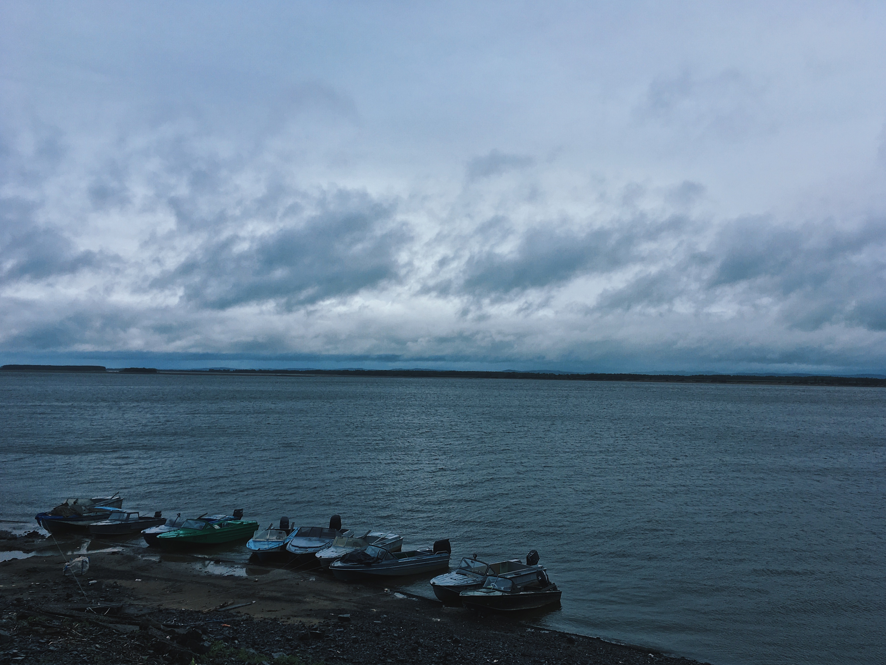
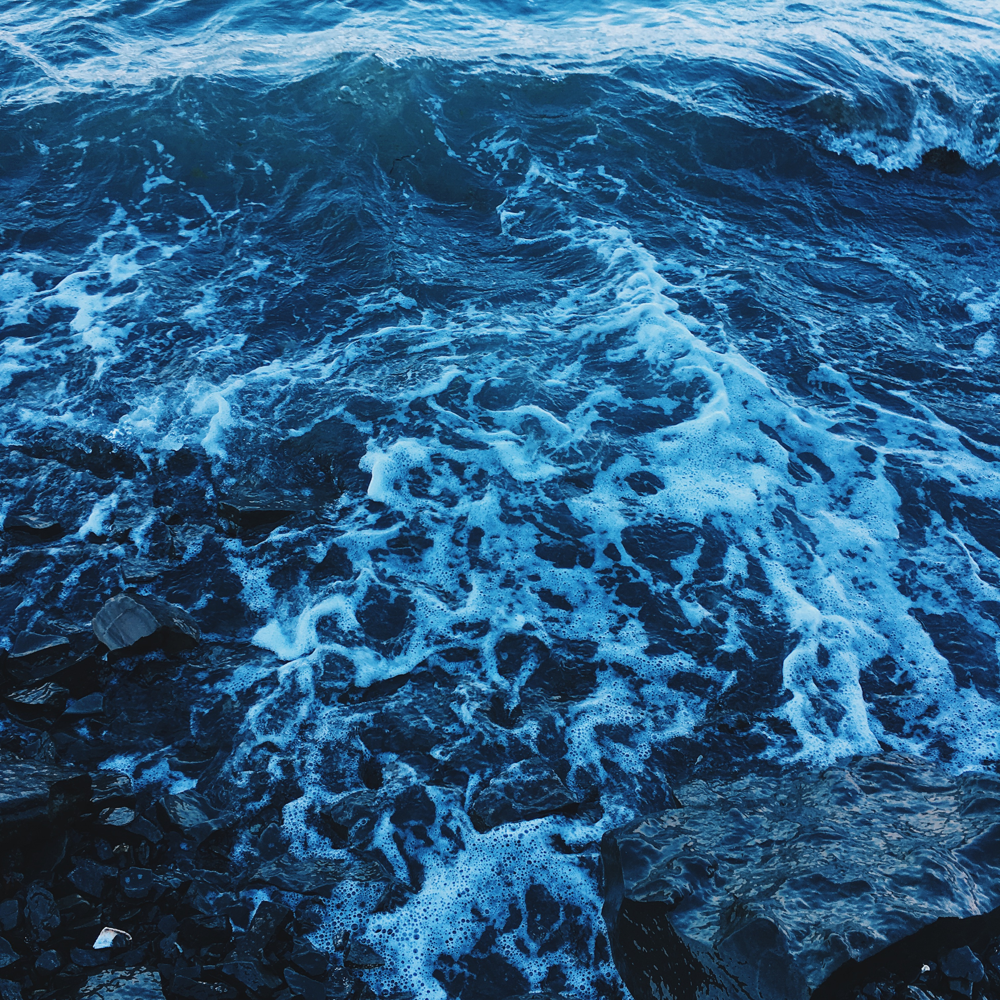
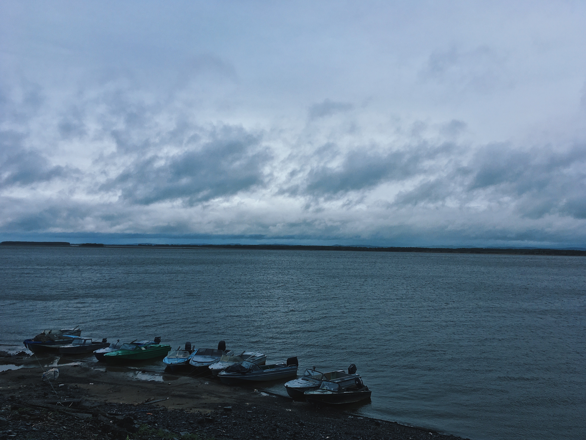
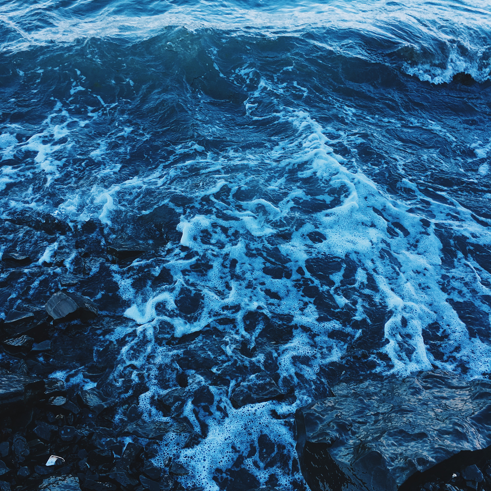

Для обратной связи
Бесплатный звонок: 9003-097-887-77-07
Электронная почта: uremydeepsea@gmail.com
субъект Российской Федерации, расположен на Дальнем Востоке России. Административный центр — город Хабаровск. Хабаровский край образован 20 октября 1938 года указом Президиума Верховного Совета СССР «О разделении Дальневосточного края на Хабаровский и Приморский края». Граничит на севере с Магаданской областью и Республикой Саха (Якутия), на западе с Амурской областью, на юго-западе с Еврейской автономной областью и КНР, на юго-востоке с Приморским краем. С северо-востока и востока омывается Охотским морем, с юго-востока — Японским морем. От острова Сахалин отделяется проливами Татарский и Невельского. Помимо основной, континентальной части, в состав края входят несколько островов, среди них самые крупные — Шантарские. Общая протяжённость береговой линии — около 2500 км, включая острова — 3390 км. Край занимает территорию площадью 787 633 км² — 3-е (4-е) место среди субъектов Российской Федерации. Население края — 1 298 233 (2022)
XVII в
Начало освоения Дальневосточных территорий. Русские землепроходцы шли на восток,
чтобы "проведывать новые земли", приводить их под государеву руку и устанавливать торговые связи.
В 1639 г. Группа томских казаков во главе с Иваном Юрьевичем Москвитиным вышла к
Охотскому морю.
В устье р. Улья был основан первый острог. Казаки исследовали морские побережья и собрали первые данные
об Амуре.
В 1643 г. На поиски неизведанной Даурской земли (так называлось западное Приамурье)
якутское
воеводство отправило отряд казаков под руководством
Василия Даниловича Пояркова. Это была большая экспедиция из 132 человек. Казаки с притока Лены Алдана
переправились в бассейн р. Зеи на р. Гонама.
Часть отряда здесь зазимовала, а часть отряда пошла дальше. Весной следующего года, спустившись по Зее,
отряд достиг Амура.
Поярков составил достаточно полное описание реки, хозяйства и быта местных народностей.
От низовьев Амура Поярков на лодках вышел в бурное Охотское море, достиг устья р. Улья и оттуда вернулся
в Якутск.
В 1650 г.
Сведения о богатствах Амура вызвали интерес к нему со стороны сибирской промышленности.
Вслед за Поярковым сюда пришел вологодский крестьянин Ерофей Хабаров. Его отряд состоявший из 100
человек,
вышел на Амур в 1650 г. другим путем: вниз по Лене, затем по ее притоку Олекме, по нему к истоку и далее
сухопутьем к Амуру.
Часть отряда укрепилась в даурском городке Албазино. С этого времени вокруг него строились новые
поселения, развивались промыслы,
зарождалась торговля.
В 1682 г. В составе русского государства появилось Албазинское воеводство.
1689 г.
Албазин был оставлен после долгой осады, и по Нерчинскому договору 1689 г. русские ушли с Амура почти на
полтора столетия.
1849-1855 гг.
Экспедиция Геннадия Ивановича Невельского доказала проходимость устья Амура для морских кораблей и
окончательно установила, что Сахалин – это остров.
В 1850 г.Невельской в устье Амура основал первый военный пост – Николаевский.
1854 – 1857 гг. Время так называемых Амурских сплавов, организованных
генерал-губернатором Н.Н.
Муравьевым. Причиной сплавов послужила
Крымская война (1853-1856 гг.) во время которой англо-французкий флот пытался захватить Петропавловск и
другие русские поселения на побережье Тихого океана. Путь по Амуру оказался самым коротким и надежным,
чтобы доставить сюда переселенцев и войска для защиты восточных владений России. Амурские сплавы стали
толчком для хозяйственного освоения края. Имена русских первопроходцев не забыты и в третьем
тысячелетии.
20 октября 1938 г. Образован Хабаровский край при разделе Дальневосточного края с
центром в г.
Хабаровске.
Основные горные хребты — Сихоте-Алинь, Сунтар-Хаята, Джугджур, Буреинский, Дуссе-Алинь, Ям-Алинь. Высочайшая точка — гора Берилл (2933 м), низшая — уровень моря. Территория края простирается с юга на север на 1800 км, с запада на восток — на 125—750 км. Общая площадь территории края составляет 788 600 км², э то 4,5 % всей территории страны. По территории он немного превосходит Иркутскую область, занимая 4-е место по территории среди субъектов России, а также Новую Гвинею — 2-й по величине остров в мире. Лесной фонд составляет 75,5 млн га 755 тыс. км², лесные земли 59,2 млн га 592 тыс. км².
Весь Хабаровский край находится в 8-й часовой зоне (MSK+7). Относительно Московского времени часовая зона имеет постоянное смещение +7 часов. Смещение относительно UTC составляет +10:00.
Климатические условия меняются при движении с севера на юг, зависят также от близости к морю и от формы и характера рельефа. Зима в крае — продолжительная, снежная, суровая. Холодный период года длится в среднем шесть месяцев (с конца октября по конец апреля). Средняя температура января от −22 °C на юге и до −40 °C на севере, на побережье от −18 °C до −24 °C. Абсолютный минимум температуры даже на юге края достигает −50 °C. Лето жаркое и влажное. Средняя температура июля на юге +20 °C, на севере около +15 °C. Годовая сумма осадков колеблется от 400—600 мм на севере и до 600—800 мм на равнинах и восточных склонах хребтов. На юге края до 90 % осадков выпадает с апреля по октябрь, особенно много их в июле и августе.

 



Бесплатный звонок: 9003-097-887-77-07
Электронная почта: uremydeepsea@gmail.com